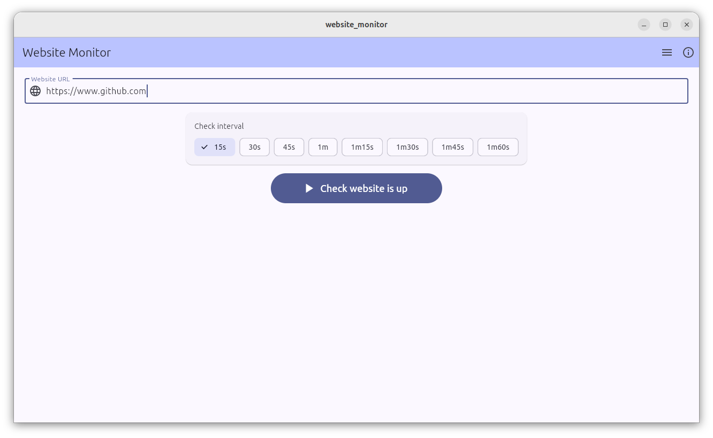
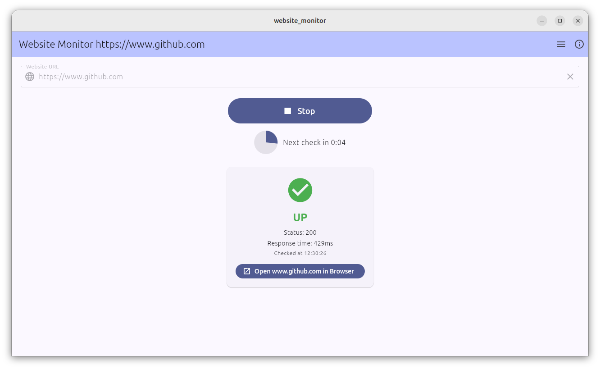
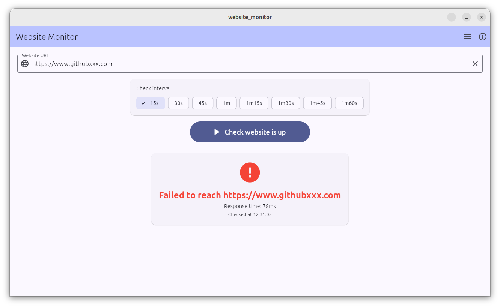

AI Coding Guide
AI engineering is about creating applications that use AI models to make predictions, understand language, analyze data, or automate tasks.
OpenCode On Ubuntu Linux Examples
To install and start OpenCode for free on Ubuntu use:
sudo apt update
sudo apt install curl -y
curl -fsSL https://opencode.ai/install | bash
source ~/.bashrc
opencode
1. Website Monitor, Flutter
I saw on a website that Canonical, the publisher of Ubuntu, are now the desktop maintainers of Flutter, a Google developed open source framework for building multi-platform (Mobile, Desktop, Web, Embedded) applications. 'That could be worth a look' I thought so I used OpenCode to crack out a little Website Monitor app in Flutter in about an hour. Never used Flutter before, still haven't - not even looked at the source code for this one but the app looks reasonably pretty when it fires up. AI Agentic development really put in a good show here ... new 'instant' working Flutter app from scratch with literally zero knowledge or experience of the framework and without editing or viewing a single line of source! Developed on a Ubuntu 25.04 Live USB.



Here's the AI generated Linux source code (OpenCode also generated 'android', 'ios', 'macos', 'web' and 'windows' directories which I'm guessing held generated source for those platforms):
ClamTk Refresh Source Code Changes
2. Ubuntu Native AI Inference Snap Manager, Python
Inference snaps are a new (still in Beta but available and working) addition to Ubuntu offering a quick, easy and free local install of a hardware‑optimized AI inference engine and various LLM models. Using CPU only, it’s the fastest local AI I’ve seen — matching the speed of commercial cloud chatbots such as ChatGPT.
The easiest way to get started is to open a terminal and enter:
sudo snap install gemma3 --beta
gemma3 chatOnly the gemma3 model installed on my machine. As of May 2026 it occasionally generates errors (including repeating tokens at the end of an answer), but offers speed, speed, speed at a level unseen until now for CPU inference.
Terminal, Web and “OpenAI API” interfaces are provided out of the box, so I asked OpenCode to generate a small Python/GTK manager for all of them:
Run using:
python3 ./ai-snap-manager.py

3. LangChain, Python
I saw “LangChain” mentioned in relation to AI engineering. What’s that? I wondered. One question to Google Gemini followed by a two‑minute OpenCode session answered everything. OpenCode makes using LangChain (which allows Python apps to use LLMs with extra tooling) a zero‑coding doddle.
OpenCode generated langchain_app.py:
#!/usr/bin/env python3
"""LangChain app using llama.cpp via llama-cpp-python."""
import sys
import argparse
from pathlib import Path
from langchain_community.llms import LlamaCpp
from langchain_core.callbacks import CallbackManager, StreamingStdOutCallbackHandler
from langchain_core.prompts import PromptTemplate
def build_llm(model_path: str, n_gpu_layers: int = 0, n_ctx: int = 2048):
return LlamaCpp(
model_path=model_path,
temperature=0.7,
max_tokens=512,
n_ctx=n_ctx,
n_gpu_layers=n_gpu_layers,
n_threads=8,
n_batch=512,
f16_kv=True,
verbose=False,
callbacks=CallbackManager([StreamingStdOutCallbackHandler()]),
)
def main():
parser = argparse.ArgumentParser(description="LangChain + llama.cpp")
parser.add_argument("model", type=str, help="Path to GGUF model file")
parser.add_argument("--gpu-layers", type=int, default=0, help="GPU offload layers")
parser.add_argument(
"--prompt",
type=str,
default="Explain quantum computing in one sentence.",
help="Prompt to send to the model",
)
parser.add_argument("--ctx", type=int, default=2048, help="Context window size")
args = parser.parse_args();
if not Path(args.model).exists():
print(f"Error: model file not found: {args.model}", file=sys.stderr)
sys.exit(1)
llm = build_llm(args.model, args.gpu_layers, args.ctx)
prompt = PromptTemplate.from_template(
"You are a helpful assistant.\n\nUser: {question}\nAssistant:"
)
chain = prompt | llm
print(f"\n--- Prompt ---\n{args.prompt}\n--- Response ---")
chain.invoke({"question": args.prompt})
if __name__ == "__main__":
main()
OpenCode also generated a single command that installs all dependencies,
downloads the Google Gemma‑4 LLM, and runs langchain_app.py.
Tested on Ubuntu 26.04 LTS Live USB:
mkdir -p models && sudo apt install python3-pip python3-venv wget -y && \
python3 -m venv venv && source venv/bin/activate && \
pip install langchain-core langchain-community llama-cpp-python && \
wget -O models/gemma-4-E2B-it-Q8_0.gguf \
https://huggingface.co/ggml-org/gemma-4-E2B-it-GGUF/resolve/main/gemma-4-E2B-it-Q8_0.gguf && \
python langchain_app.py models/gemma-4-E2B-it-Q8_0.gguf
4. Llama.cpp Revisited, C++
OpenCode generated single command to download llama.cpp, build it (and the 'llama-cli' example tool) then download the Google Gemma 4 LLM. Tested on a Ubuntu 26.04 LTS Live USB. All free.
sudo apt update && sudo apt install -y git build-essential cmake wget libcurl4-openssl-dev && test -d llama.cpp || git clone https://github.com/ggerganov/llama.cpp.git && cd llama.cpp && git submodule update --init --recursive && cmake -B build -G "Unix Makefiles" -DLLAMA_CURL=ON && cmake --build build -j $(nproc) --target llama-cli && mkdir -p models && test -f models/gemma-4-E2B-it-Q8_0.gguf || wget -O models/gemma-4-E2B-it-Q8_0.gguf https://huggingface.co/ggml-org/gemma-4-E2B-it-GGUF/resolve/main/gemma-4-E2B-it-Q8_0.ggufand a command to run the built llama-cli...
./build/bin/llama-cli -m ./models/gemma-4-E2B-it-Q8_0.gguf
5. Agent Development Setup, C++
Not just a code generator, OpenCode is also a general AI chatbot. I asked it to define an 'AI agent' in easy to undestand programming terms, its answer was...
An AI agent is:
while True:
observe environment # get input / state
ask LLM: "what next?" # decide action
execute action # run tool / speak / move
store result # feed back to context
The LLM acts as the "brain" deciding what to do each iteration. The agent loop handles calling tools, feeding results back in, and deciding when to stop.
The two key differences from a raw LLM call:
1. **Stateful** — it maintains conversation history across turns
2. **Can act** — it calls functions (search, calculator, file ops, etc.) and feeds results back into the loop
It's a `while` loop driven by an LLM at each step.I then asked ChatGPT to help me define commands for installing ‘stuff needed to develop a lean'n'mean C++ AI agent on Ubuntu Linux’ (i.e. the ‘agent.cpp’ Mozilla agent framework which invokes the ‘llama.cpp’ C/C++ AI inference engine as a sub-component) along with a micro IBM 'Granite' LLM downloaded from Hugging Face for testing. All installed local, everything free and anonymous at all stages (including running) of course.
sudo apt update && \
sudo apt install -y git build-essential cmake wget && \
git clone https://github.com/mozilla-ai/agent.cpp.git && \
cd agent.cpp && \
git submodule update --init --recursive && \
cmake -B build -DCMAKE_BUILD_TYPE=Release -DAGENT_CPP_BUILD_EXAMPLES=ON && \
cmake --build build -j$(nproc) && \
mkdir -p models && \
wget -O models/granite-4.0-micro-Q4_K_M.gguf \
https://huggingface.co/ibm-granite/granite-4.0-micro-GGUF/resolve/main/granite-4.0-micro-Q4_K_M.gguf && \
echo "Starting shell-example..." && \
./build/shell-example -m models/granite-4.0-micro-Q4_K_M.ggufEnter the above and you'll have a locally running 'Ollama style' AI chatbot running in an agent framework...


LLMs and code versions need to be chosen careful carefully when using agent.cpp with llama.cpp else compilations can conflict and results can fail - a modern version of DLL hell!
6. World News (RSS) Agent, C++ (llama.cpp + Mozilla agent.cpp)
C++ or higher-level frameworks for AI agent development? Here's a handy comparison table.
Using Ubuntu 26.04 LTS Live USB. All free and anonymous, no coding by me, full power, full speed, AI agent written in C++. OpenCode did everything including all the Internet downloading, creating files and directories, source editing, source code building, resolving compilation errors, testing, functionality changes upon my request and final packaging. I watched TV as OpenCode was doing its stuff (specifically reruns of 'Some Mothers Do 'Ave 'Em' and 'The Avengers' (starring Linda Thorson)!).
sudo apt update
sudo apt install curl -y
curl -fsSL https://opencode.ai/install | bash
source ~/.bashrc
opencode
1) Download and extract the latest llama.cpp source code from GitHub (https://github.com/ggml-org/llama.cpp), understand the codebase, download the gemma4 GGUF model (the smallest available) from HuggingFace (https://huggingface.co/), build llama.cpp, test that the downloaded GGUF works with the built llama.cpp 2) Download and extract the latest Mozilla Agent.cpp source code from GitHub (https://github.com/mozilla-ai/agent.cpp), understand the codebase, build agent.cpp, integrating with the built llama.cpp to create a very simple example agent which gets and displays the current price of gold, silver and oil 3) Generate an HTML file AgentDetails.html detailing what has been built, what the agent does and how to start it.
Resolve compilation errors
Resolve remaining compilation errors
Fix code
Make the following report improvements .. Ubuntu version mentioned in report is wrong, I'm using 26.04 LTS, vertically align the start of comments in the File Structure section (most are ok but a few are out by a space or two)I accidentally closed OpenCode using Ctrl+C ("pressing Ctrl+C in OpenCode currently acts as an immediate exit command rather than the standard 'copy' shortcut, which is a known issue") - oh no! No need to panic, how to instantly session resume using '-s ses_<sessionid>' was handily displayed on the terminal at exit. Phew!
opencode -s ses_<sessionid>
Please continue and fix vertical alignment, looks like you've stopped doing actions
All seem aligned correctly apart from '# GGUF model (4.96 GB)' - only one horizontal space (not two as current) needed in front of that'Allow once' highlighted in OpenCode awaiting my input: I pressed Enter
'Allow once' highlighted in OpenCode awaiting my input: I pressed Enter
'Allow once' highlighted in OpenCode awaiting my input: I changed this to 'Allow always' using then right arrow key then pressed Enter
'Confirm' highlighted in OpenCode awaiting my input: I pressed Enter
When running the agent I see...
=== Price Agent ===
Asking agent to get current prices of gold, silver, and oil...
Final Response: <|tool_call>call:get_prices{}
=== Done ===
~llama_context: CPU compute buffer size is 522.0020 MiB, matches expectation of 522.0020 MiB
Worked ok, got prices once then exited, enhance so that gets prices 5 times, a second wait between each price grab.
Change agent so that rather than getting commodity prices, get 5 current International news headlines from an RSS feed, display them as readable text, pause 2 seconds and repeat forever.
Prepare the current code so that it can be easily modified further on another machine - create a new directory called rssagent containing all the source, makefiles and anything else required for a clean build on that new machine. Create an html file called rssagent.html detailing the contents of rssagent and how to build on the new machine. Minor Oops, I didn't spot that the title in the generated Report should've been 'RSS Agent' rather than 'Price Agent' and name of the generated binary 'rss-agent' rather than 'price-agent' due to the requirements change late on, neither did OpenCode!
Generated 'How To Use On Another Machine' Report
The agent running:

 'GitHub repository style' source tree.
'GitHub repository style' source tree.
A handy rssagent.tar.gz which was also generated by OpenCode is in the parent directory of this source tree.
7. Code Snippets, C++
A tiny C++ program that issues a single query to OpenCode and displays the result. Possibly useful when you want a quick snippet of code rather than Google or Stack Overflow searching.
Makefile and C++ code were both generated by OpenCode.
Before attempting a first make, install OpenCode then get it to inspect the codebase:
sudo apt update; sudo apt install -y curl; curl -fsSL https://opencode.ai/install | bash; source ~/.bashrc; opencode
Read Makefile and snippet.cpp to understand the codebase then install all build tools required to build the codebase.

8. Linux Kernel, C
Thursday, 23 Apr 2026
For about 30 years the Linux kernel has been a Finnish black art, impenetrable C code that no one dare venture near. AI agentic coding changes that. I asked OpenCode to analyse the latest kernel source code for bugs and issues, and it completed in a couple of minutes, generating a report.
Some interesting integer overflow risks from section 4 of the report:
| Severity | File | Line(s) | Issue Description | Recommendation |
|---|---|---|---|---|
| High | kernel/sched/topology.c | 2077 | sizeof(void *) * nr_levels could overflow on systems with high core counts. | Use safe_add_overflow() or check for overflow before multiplication. |
| High | kernel/sched/topology.c | 2086 | nr_node_ids * sizeof(void *) multiplication could overflow. | Add overflow checking before allocation size calculation. |
Report: HTML report
This report was generated using a Ubuntu 24.04 Live USB:
sudo apt update
sudo apt install curl -y
curl -fsSL https://opencode.ai/install | bash
source ~/.bashrc
opencode
Download and extract the latest Linux source code from https://github.com/torvalds/linux, understand the codebase in subdirectory kernel, find any bugs, memory leaks, bad programming practices and areas for improvement in the files in this directory then generate a report file homework_for_Linus.html detailing all issues and possible improvements found.
9. ClamAV GTK Control Application, Python
knocked up in a couple of minutes using OpenCode, here's a lighwight Python application,
using GTK for the GUI, which calls the ClamAV tool to scan files and irectories for known viruses.
Just scans, doesn't remove or quarantine; could easily be extended to do these actions as ClamAV supports them.
Why GTK? - Tkinter is older style cross platform, PySide/PyQt is modern style cross platform,
GTK is current GNOME native.

This app was generated on a Ubuntu 26.04 LTS Live USB, free and anonymous, by entering the following:
cd ~/Downloads
sudo apt update
sudo apt install curl -y
curl -fsSL https://opencode.ai/install | bash
source ~/.bashrc
opencode
Create a Python app which uses GTK to control and use the ClamAV antivirus tool on ubuntu
Enhance to allow a single file to be selected and scanned
Enhance so that if ClamAV isn't installed, the command to install it is shown on the warning dialog when a Scan is attempted
Tried an update, got Updating...
ERROR: Problem with internal logger (UpdateLogFile = /var/log/clamav/freshclam.log).
ERROR: initialize: libfreshclam init failed.
ERROR: Initialization error!
ERROR: Failed to lock the log file /var/log/clamav/freshclam.log: Resource temporarily unavailable
Update failed (code 2)
The update works but I am getting a prompt to authenticate three times during the update, is it possible to only authenticate once at the start of the operation
Add comments at the top indicating the program author (i.e. you!), the date of creation and usage info
Output all prompts entered to prompts.txt
I've popped the generated code into the following proper 'big boy's pants style' GitHub repository (apart from the image file all files were generated by OpenCode):
GitHub repository
10. Clipboard Monitor, Python
Been after a simple Windows 10 style clipboard monitor for Ubuntu for ages that is tiny, simple to install and open source. OpenCode to the rescue.
Usage: python3 ./clipboard_monitor.py
Missing required package auto detected and installed...

'Clear clipboard' button greyed out if clipboard empty...

But enabled if something is on it...

11. ClamTk GUI Refresh, Perl
ClamTk is a free and open-source graphical interface for the ClamAV command-line antivirus program. Although the project was officially retired in 2024, the tool is still well used but many users consider the GUI interface 'functional' rather than 'modern'.
AI Agentic development can fix that in a few minutes, free and anonymous!
Using a Ubuntu 26.04 Live USB, start with the latest version of ClamTk...

do this...
cd ~/Downloads
sudo apt update
sudo apt install curl -y
curl -fsSL https://opencode.ai/install | bash
source ~/.bashrc
opencode
Download the latest version of ClamTK from https://github.com/dave-theunsub/clamtk, understand the codebase, completely change the front GUI screen to a modern layout and style of your choice, build a new executable, call the executable clamtkrefresh, output an HTML file clamtkrefresh.html detailing the changes made and how to build and run clamtkrefresh.
./clamtkrefresh looks identical to ./clamtk - where are the GUI changes?
Can you make the selection items on the front screen slightly smaller and the main window slightly bigger so that I can see all options when the application is started without needing to scroll
Create a source tree for clamtkreresh called clamtkrefreshcode suitable for uploading as a GitHub repository
Output all the user prompts entered in this session to file userprompts.txt
Make all the actions options on the front GUI screen the same size, width and height
Some of the cards are still different dimensions (e.g. 'Preferences' has a smaller width than 'Update'). Make all 11 cards have an identical width and height - use the current largest card width and largest card height for this.
Form userprompts.txt and clamtkrefreshcode using given the latest codeand you'll get this...


Here's the updated source code. The changes are in lib/ClamTk/GUI.pm
ClamTk Refresh Source Code Changes
12. Tetris, HTML/JavaScript/CSS Webpage
A Tetris clone running on a webpage, 100% AI vibe coded, the initial app taking about 30 minutes. It has sprites, sounds, music, levels, and the usual stuff.
The code was generated on Ubuntu 24.04.4 LTS Live USB and saved to external media mid session.


Preparing to vibe:

Vibe Session 1 (Initial App Creation)
Vibes
Generated Code
Vibe Session 2 (Enhancements; Hours, Days, Whenever Later)
Vibes
Generated Code
13. Self-Forking The OpenCode Terminal
How to fork the OpenCode terminal and all associated functionality using OpenCode itself. Self-reproduction with a little extra at birth.
All free and open source; free tool, free model, anonymous, no sign-ins, no API keys. The MIT Licence used by OpenCode means any part of the tool and associated source code can be obtained and used by anyone.
Developed and tested on Ubuntu 24.04.4 LTS Live USB.
The baby is born...

It has been given a little something extra its mother (the OpenCode repository on GitHub) does not have...

But everything else works as expected...